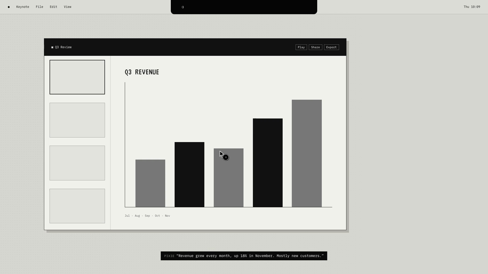

01 / 12 · VOICE
Answers in your ear, not on your screen
Hold the talk keys, ask, let go. Speech is recognised on your Mac and the answer is spoken back while the notch widens into two little ears. Nothing covers your work; the conversation waits in the notch's Chat tab.
- Hold ⌃⌥ to talk, fn⌃ to dictate into any field; change both in Settings
- On-device speech recognition
- A natural voice that runs offline, or the system voice
